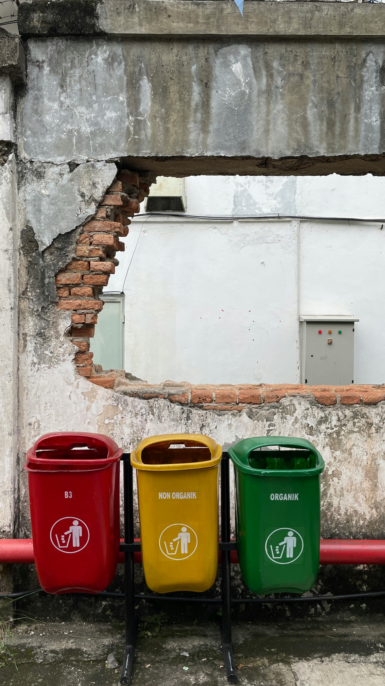
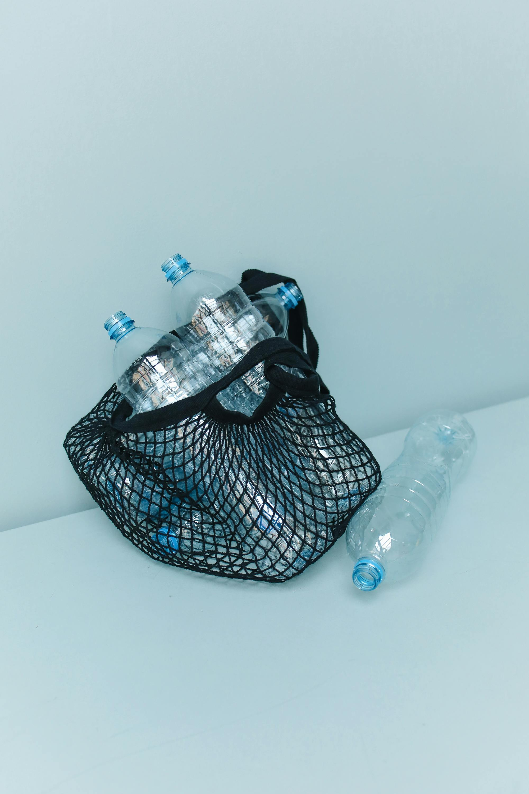

Daur ulang adalah proses mengubah sampah dan bahan limbah menjadi produk baru. Ini adalah salah satu cara paling efektif untuk mengurangi jumlah sampah yang berakhir di tempat pembuangan akhir dan melestarikan sumber daya alam kita.
Manfaat Daur Ulang
Ada banyak manfaat dari daur ulang. Pertama, daur ulang mengurangi kebutuhan akan "bahan baku" baru. Ini berarti kita mengurangi ekstraksi sumber daya alam yang berharga, seperti kayu, air, dan mineral. Kedua, daur ulang menghemat energi. Produksi barang dari bahan daur ulang seringkali membutuhkan lebih sedikit energi daripada produksi dari bahan mentah. Ketiga, daur ulang mengurangi polusi. Proses daur ulang biasanya menghasilkan lebih sedikit polusi udara dan air dibandingkan produksi dari bahan mentah.
Mulai daur ulang dengan memisahkan sampah di rumah.
Jenis-Jenis Bahan yang Dapat Didaur Ulang
Banyak bahan yang dapat didaur ulang, antara lain kertas, plastik, kaca, dan logam. Kertas dapat didaur ulang menjadi koran, majalah, atau produk kertas lainnya. Plastik dapat didaur ulang menjadi furnitur, pakaian, atau botol baru. Kaca dapat didaur ulang menjadi botol, toples, atau fiberglass. Logam seperti aluminium dan baja dapat didaur ulang berkali-kali tanpa kehilangan kualitas.
Bagaimana Anda Dapat Berpartisipasi?
Setiap orang dapat berkontribusi dalam upaya daur ulang. Mulailah dengan memisahkan sampah rumah tangga Anda ke dalam kategori yang berbeda (organik, anorganik, daur ulang). Pelajari aturan daur ulang di daerah Anda dan pastikan Anda membuang sampah daur ulang ke tempat yang benar. Selain itu, belilah produk yang terbuat dari bahan daur ulang dan dukung perusahaan yang berkomitmen pada praktik berkelanjutan.
Produk daur ulang membantu mengurangi limbah dan menghemat energi.
Kesimpulan
Daur ulang adalah langkah kecil namun sangat penting yang dapat kita lakukan untuk melindungi lingkungan. Dengan mengubah kebiasaan konsumsi dan pembuangan sampah kita, kita dapat memberikan dampak positif yang besar bagi bumi dan generasi mendatang. Mari bersama-sama menjadikan daur ulang sebagai bagian dari gaya hidup kita.